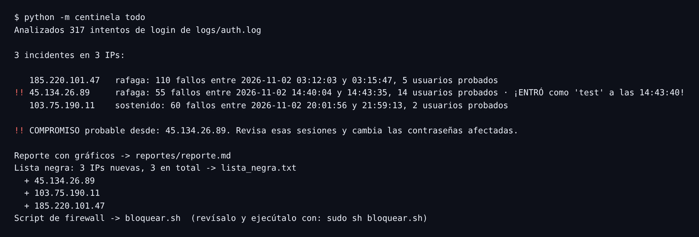

// estudiante de ciberseguridad
Human
Aprendo seguridad construyendo las herramientas que la defienden.
Escribo en Python detectores de ataques, retos CTF y herramientas de criptografía, y documento en español cada decisión: qué falla, por qué falla y cómo se arregla.
- Python
- pytest
- análisis de logs
- regex
- SSH
- criptografía aplicada
- inyección SQL
- pandas
- Linux
Proyectos
Todos con tests, código abierto y documentación en español.
Centinela
Detector de fuerza bruta en logs de SSH. Lee auth.log, encuentra las IPs que intentan adivinar contraseñas, avisa si alguna llegó a entrar, genera un reporte con gráficos y mantiene una lista negra con su script de firewall. Incluye un honeypot SSH que alimenta al detector y un curso interactivo de 13 módulos.
63 tests · auditoría de seguridad: 9 vulnerabilidades corregidas

CTF para principiantes
Diez retos progresivos en español: Base64, César, Vigenère, hashes, análisis de logs, magic bytes, esteganografía, permisos de Linux e inyección SQL sobre una app vulnerable a propósito. Cada reto trae pista, solución explicada y un verificador.
Detector de phishing
Analiza correos .eml y marca remitentes falsos, fallos de SPF/DKIM/DMARC, enlaces cuyo texto no coincide con la URL, dominios parecidos (paypa1) y lenguaje de urgencia. Da un puntaje de riesgo de 0 a 100 con la evidencia de cada señal.
Gestor de contraseñas educativo
Bóveda de línea de comandos para aprender criptografía aplicada: clave derivada con Argon2id o PBKDF2, cifrado AES-256-GCM con datos asociados, generador con secrets y medidor de fortaleza. Cada decisión está explicada en CRIPTOGRAFIA.md.
Banco de exámenes Python → Ciberseguridad
Repasos, examen fácil y examen difícil por bloque de mi curso, desde programación pura hasta criptografía, binarios, web, forense y automatización. Las soluciones se corrigen solas con pytest.
Guía de estudio Security+
Guía en español para CompTIA Security+ SY0-701: los 5 dominios con resúmenes y trampas típicas, un glosario, 200 preguntas de escenario con explicaciones y un quiz en HTML con modo examen.
Figuras interactivas
Seis visualizaciones que muestran por dentro cómo funcionan conceptos de seguridad: hash, handshake TCP, firewall, cifrado asimétrico, man-in-the-middle y token bucket.
Figuras interactivas
Se abren en una pestaña nueva, en el tema que tengas activo.
Función hash
Bloques, rondas y efecto avalancha.
SYN · SYN-ACK · ACKHandshake TCP
Números de secuencia, pérdidas y SYN flood.
iptablesFirewall
Orden de reglas y política por defecto.
RSACifrado asimétrico
Cifrar, descifrar, firmar y verificar.
MITMMan-in-the-middle
Qué ve y qué cambia un intermediario.
rate limitToken bucket
Cómo se limita el ritmo de intentos.
Writeups
Cómo resolví cada problema, paso a paso. Las flags están ocultas para no arruinar los retos.
- auditoría
El usuario lo escribe el atacante: auditando Centinela
Cómo un nombre de usuario podía culpar a una IP inocente, y 8 fallos más.
- CTF · cripto
Reto 02: César se rompe en 25 intentos
Texto conocido y fuerza bruta contra el cifrado más antiguo.
- CTF · cripto
Reto 03: Vigenère contra un ataque de texto conocido
Cómo el formato de la flag entrega la clave.
- CTF · forense
Reto 05: encontrar al atacante que sí entró
Fuerza bruta en un auth.log, con grep y con Python.
- CTF · forense
Reto 06: la extensión miente, la firma no
Magic bytes y un .txt que en realidad es un ZIP.
- CTF · estego
Reto 07: el mensaje escondido en el rojo
Esteganografía LSB en un PNG, extraída con Pillow.
- CTF · web
Reto 09: entrar como admin sin contraseña
Inyección SQL en un login y cómo se arregla.